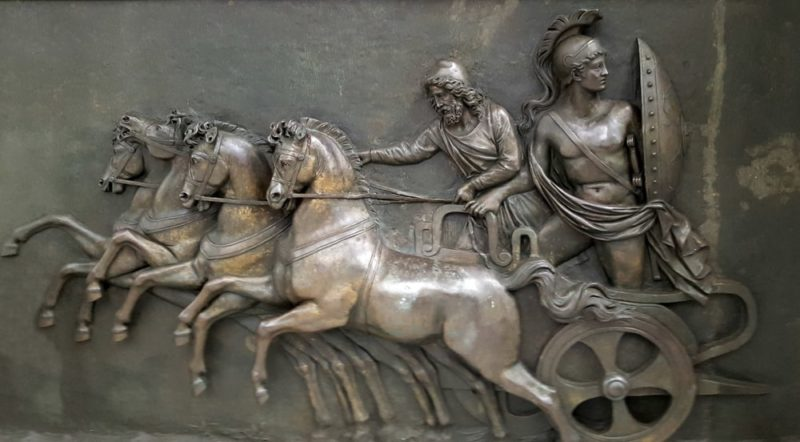

Heroes Griegos
La mitología griega se caracteriza por la abundancia de figuras heroicas. Los héroes eran semidioses: superaban a los hombres en poder, fuerza y audacia, pero se diferenciaban de los dioses por ser mortales. Eran ejemplo de virtudes y participaban en hazañas increíbles. Tenían una relación con lo divino, ya sea por ascendencia o por haber sido favorecidos por algún dios o alguna diosa. Los héroes pertenecían a un pasado memorable, no tan remoto como el tiempo de los dioses. Muchas familias nobles de las diferentes polis griegas decían descender de algún héroe mítico, y varias ciudades reclamaban haber sido fundadas por uno de ellos.
Tabla de los 7 heroes de la mitología griega
| HEROE | REFEENCIA | LOGRO |
|---|---|---|
| Heracles (Hércules) | Hijo de Zeus | doce trabajos que demostraban su fuerza y resistencia. |
| Teseo | Rey de Atenas | matar al Minotauro |
| Perseo | Hijo de Zeus | derrotó a Medusa y salvó a Andrómeda |
| Jasón | Líder de la expedición | buscaban el vellocino de oro. |
| Belerofonte | El jinete de Pegaso | derrotar a la Quimera |
| Odiseo | Rey de Ítaca | regreso a casa después de la Guerra de Troya |
| Aquiles | Guerrero más poderoso | conocido por su fuerza y orgullo |
